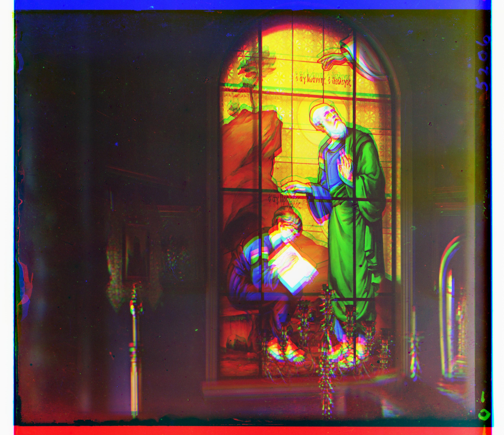
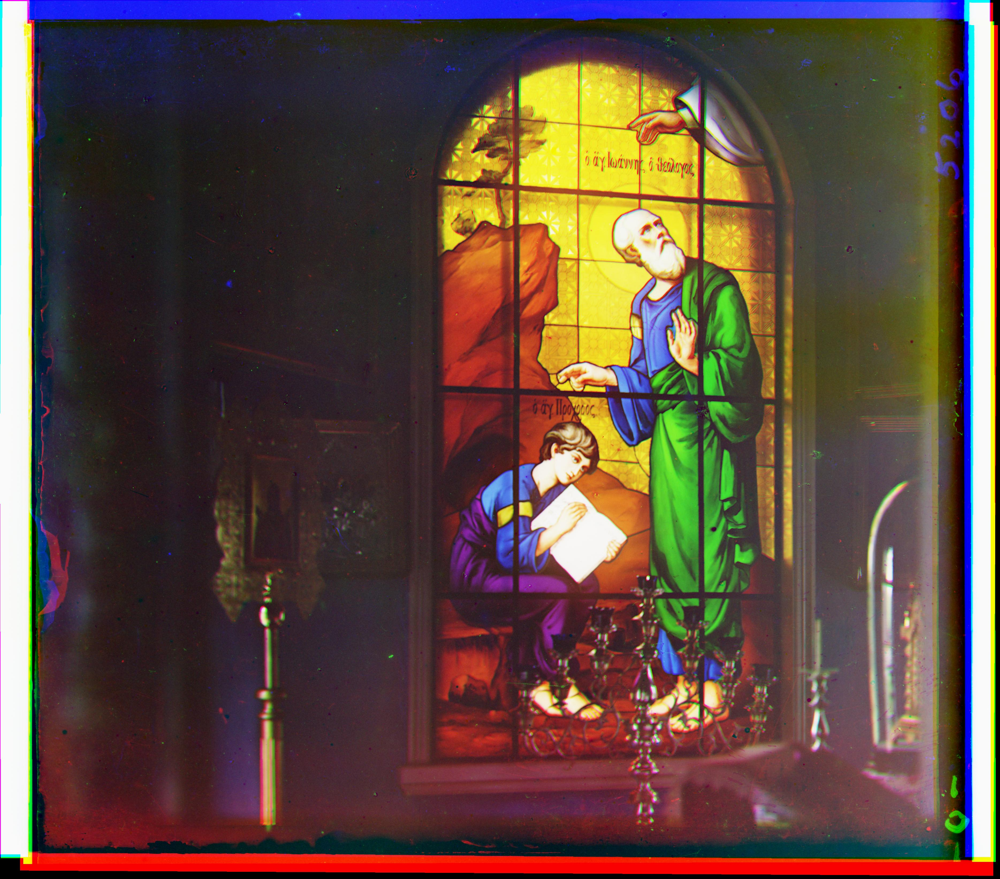

Bradley Flynn
CSE 555 Project 1
Introduction
In the early 1900s, Sergey Prokudin-Gorsky travelled Russia and captured a variety of scenes
with three different color filters: blue, green, and red. Our job is to align these images automatically.
Structure of my Algorithm
In the Prokudin-Gorskii photo collection, images were captured
of the same scene with 3 different color channel extractions. Ordered
from top to botom, there are blue, green, and red filtered images.
My algorithm takes a few steps in finding the correct allignment:
- Locate the best alignment in a blurred version of the image
(about 512x512 pixels).
- We then search on a window of a "less blurred" version of the
image for alignment shifts.
- Search yet again on a smaller window on the actual image for
finer alignments.
- Align the image with these new shifts and then search for
rotational shifts.
- Search for subpixel alignments on a small portion of the image using convolutions of red
and green channels and then comparing them with the blue channel.
- Finally, crop out a .85x.85 window of the image.
When searching for a good alignment, my algorithm's error metric used a normalized cross
correlation between the edges in the image. This helps to find features that may be similar across color channels.
When running on my personal computer, this takes anywhere from fifteen to thirty seconds.
Results
Prior to any searching, we take an image like so:

Split the image into thirds and layer the color channels

After our shift searches on the edges in the image, we would end up
with an image like this:
We would then search for possible rotational shifts on the edges in the
image and end up with:

On a smaller window of the image, we would then look for subpixel shifts and then apply
a convolution to the image with noted shifts (if any)

Finally, to crop out the edges, I didn't do anything special. I just used an
85% window which seemed to work for most images

Here's a look at another image process:


Something interesting: if there is a repeated pattern, my algorithm may not work the best. For example, in this image:

You can see there are a lot of horizontal lines in the image from the trees in the backgorund. When trying to match features in the
image, those branches would be problematic. Here is what my output would look like:

My algorithm seems to work best on images without patterns that are in close proximity to each other.
Project Code